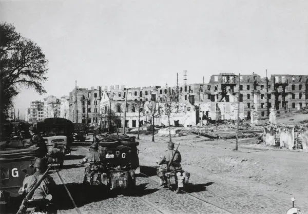

Fases da Guerra
Supremacia do Eixo
A guerra, conforme mencionado, foi iniciada quando os alemães invadiram a Polônia em 1º de setembro de 1939. A partir desse momento, os alemães iniciaram a utilização de uma tática que se destacou no conflito: a blitzkrieg. Essa palavra em alemão significa “guerra-relâmpago” e consistia, basicamente, em uma tática em que artilharia e infantaria faziam ataques coordenados contra as linhas adversárias com o objetivo de abri-las. A partir da abertura das linhas, a infantaria e os blindados faziam rápidas movimentações no território para penetrar na brecha que foi aberta.
Entre 1939 e 1941, os alemães conquistaram Polônia, Dinamarca, Noruega, Holanda, Bélgica, França, Iugoslávia e Grécia. Nesse período, as conquistas aconteciam em uma velocidade assombrosa, com as forças alemãs passando a dominar grande parte do continente europeu.
Em 1941, a Alemanha parecia invencível, e os alemães organizaram o seu plano mais ousado em toda ,ma guerra: a Operação Barbarossa. Essa operação consistia em coordenar a invasão do grande adversário dos alemães na Europa: o bolchevismo soviético. Até esse momento, ambas as nações estavam em paz, pois, em 1939, haviam assinado um pacto de não agressão, em que concordavam em não lutar entre si durante um período de 10 anos.
A invasão da União Soviética aconteceu em 22 de junho de 1941, e o plano dos alemães era conquistar o país em oito semanas. O fracasso dos alemães nesse sentido destruiu toda e qualquer possibilidade de o fazerem em longo prazo, pois a Alemanha não tinha recursos e nem dinheiro para uma guerra de longa duração contra os soviéticos.
Os alemães tinham três objetivos: Moscou, Leningrado e Stalingrado. A capital soviética quase foi conquistada porque os alemães chegaram a poucos quilômetros dela, mas falharam. Leningrado foi cercada pelos alemães durante 900 dias e deixada para morrer de fome.
O ponto-chave da Segunda Guerra Mundial aconteceu em uma cidade do sul da União Soviética que fica às portas do Cáucaso e à beira do rio Volga: Stalingrado. A conquista dessa cidade era crucial para os alemães garantirem o controle sobre os poços de petróleo do Cáucaso, além de ser simbólico conquistar a cidade que levava o nome do líder da União Soviética, Josef Stalin.
Equilibrio de forças
A luta em Stalingrado foi duríssima e estendeu-se de julho de 1942 até 1943. Antes de Stalingrado os alemães haviam conquistado vastos territórios da União Soviética (os alemães tinham conquistado os Países Bálticos, Ucrânia, Bielorrússia etc). Em Stalingrado, os alemães sofreram a derrota que iniciou a virada dos Aliados.
A batalha por Stalingrado resultou na morte de 1 a 2 milhões de pessoas, e a descrição dessa batalha define-a como um inferno. A cidade foi arrasada, e os alemães estiveram bem perto de conquistá-la, mas a resistência dos soviéticos garantiu a derrota dos alemães. Durante essa batalha, diariamente, milhares de soldados e de munição eram enviados para as tropas soviéticas. A derrota dos alemães veio logo após a Operação Urano.
Derrota do Eixo
As tropas alemãs foram empurradas para fora da cidade e, sem autorização para recuar, foram cercadas pelos soviéticos. Nesse momento, o exército, a indústria e a economia alemã iniciaram seu colapso. Começava a recuperação dos Aliados na luta contra os alemães. Outra batalha importante que selou o destino dos alemães na União Soviética foi a batalha travada em Kursk, em 1943.
Nesse ano também (1943), britânicos e americanos ampliaram seus esforços na luta contra os alemães. A partir dos esforços dos Estados Unidos e da Inglaterra, as tropas alemãs foram expulsas do norte do continente africano. Depois, os Aliados debateram a respeito das possibilidades de um ataque contra os alemães na Normandia. Esse plano, no entanto, foi adiado, e americanos e britânicos optaram por invadir a Sicília.
Com o desembarque de tropas aliadas na Sicília, iniciou-se a reconquista da Itália, e os alemães foram obrigados a reforçar as defesas no norte italiano. Foi na frente de batalha travada na Itália, inclusive, que as tropas brasileiras lutaram entre 1944 e 1945. A partir de 1944, a situação da Alemanha na guerra era caótica, e mais derrotas ocorreram.
junho de 1944, britânicos e americanos lideraram, no dia 6, o desembarque de tropas conhecido como Dia D. Essa operação fazia parte dos planos de reconquista da França (ocupada pelos alemães desde 1940). No Dia D, foram mobilizados cerca de 150 mil soldados, que desembarcaram em cinco praias da Normandia: os codinomes das praias eram Utah, Juno, Sword, Gold e Omaha."
"Na virada de 1944 para 1945, a situação da Alemanha era desesperadora. Nos primeiros meses de 1945, os alemães acumularam grande parte de suas perdas em toda a Segunda Guerra Mundial. Na virada do ano, foi travada a última ofensiva dos alemães na Batalha das Ardenas, que tinha como objetivo recuperar territórios na França e Bélgica. A campanha foi um fracasso e serviu para enfraquecer as tropas alemãs que ainda resistiam no front oriental.
Uma consequência direta da derrota nas Ardenas foi a perda de territórios na Polônia, quando os soviéticos conseguiram avançar do rio Vístula para o rio Oder e ficar à beira da fronteira com a Alemanha. Além disso, os soviéticos avançaram pelo Leste Europeu, conquistando locais como Budapeste (Hungria) e a Iugoslávia.
Bombas
Existe um debate intenso entre os historiadores a respeito da questão ética por trás do lançamento dessas bombas sobre o Japão. Existem aqueles que defendem a hipótese de que o lançamento foi apenas uma demonstração de força dos americanos e totalmente desnecessário, tendo em vista a situação em que o Japão estava naquele momento. Por outro lado, existem aqueles que afirmam que o lançamento foi justificado dentro daquele cenário porque o Japão negava-se a se render, e a invasão da ilha principal do Japão custaria a vida de milhares de soldados americanos.
Além disso, dentro do cenário de resistência dos japoneses até a morte, os americanos não sabiam até quando o conflito se estenderia. Assim, o lançamento seria justificado como ferramenta para forçar o fim da guerra.
Argumentos à parte, o lançamento das bombas atômicas foi um dos capítulos mais tristes da história mundial. Os relatos narram toda a destruição e o horror que se espalharam em 6 e 9 de agosto de 1945. Após o lançamento da segunda bomba, os japoneses renderam-se incondicionalmente aos americanos"